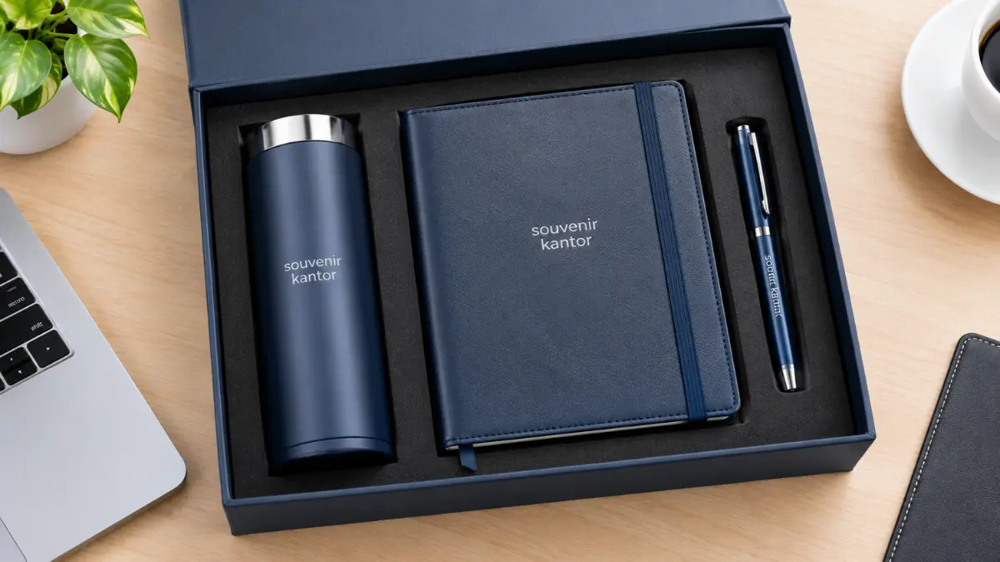
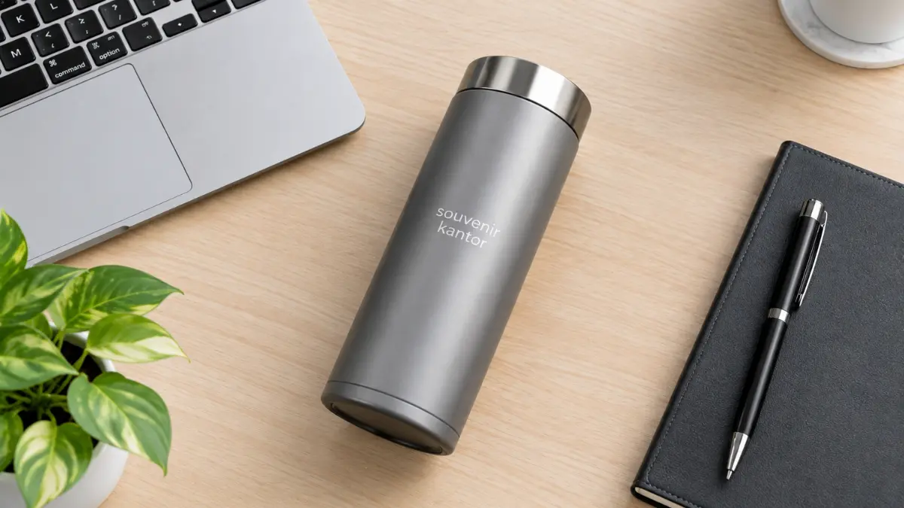

Ide Souvenir BUMN Jakarta Formal, Elegan dan Bisa Custom

Ide souvenir BUMN Jakarta yang formal dan fungsional meliputi tumbler premium, notebook, pulpen, gift set, dan plakat, yang dipilih menurut acara, penerima, dan kebutuhan branding. Notebook dan pulpen sesuai untuk rapat dan seminar, gift set untuk klien dan mitra, sedangkan plakat sesuai untuk apresiasi dan penghargaan. Souvenir Kantor Jakarta dapat menerapkan logo perusahaan pada produk-produk tersebut dan memproduksinya sesuai jumlah kebutuhan acara Anda.
Fungsi harian menjadi dasar ide souvenir yang efektif, karena produk yang berguna cenderung disimpan dan dipakai. Tumbler, notebook, pulpen, gift set, dan plakat memiliki kesan dan peran yang berbeda. Pilihan produk dapat disesuaikan dengan jenis acara, penerima, dan tingkat formalitas. Logo, warna, dan packaging yang konsisten membuat souvenir mencerminkan identitas korporasi.
- Mengapa Fungsi Menjadi Dasar Ide Souvenir BUMN Jakarta yang Efektif?
- Ide Souvenir BUMN Jakarta yang Formal
- Tumbler Premium untuk Aktivitas Harian
- Notebook dan Pulpen untuk Rapat, Seminar, dan Workshop
- Gift Set Corporate untuk Klien, Mitra, dan Tamu Khusus
- Plakat untuk Penghargaan dan Apresiasi
- Ide Souvenir BUMN Jakarta Berdasarkan Kebutuhan Acara
- Apa Ciri Souvenir BUMN yang Sesuai Identitas Korporasi?
- Ide Souvenir BUMN Jakarta Berdasarkan Penerima
- Konsultasikan Ide Souvenir BUMN Jakarta di Souvenir Kantor Jakarta
- Pertanyaan Seputar Ide Souvenir BUMN Jakarta
- Kesimpulan
Mengapa Fungsi Menjadi Dasar Ide Souvenir BUMN Jakarta yang Efektif?
Souvenir kantor yang berguna cenderung disimpan dan dipakai berulang, sehingga logo perusahaan lebih sering terlihat oleh penerima bahkan setelah acara selesai.
Menurut 2026 ASI Global Advertising Impressions Study, sekitar 78 persen konsumen yang disurvei menyimpan produk promosi karena menganggapnya berguna.
Survei tersebut mencakup konsumen di Amerika Utara dan Eropa, sehingga hasilnya dibaca sebagai indikasi umum, bukan angka pasar Indonesia.
Prinsipnya tetap masuk akal untuk perusahaan BUMN di Jakarta: souvenir yang dipakai dalam aktivitas kerja, seperti minum, mencatat, dan menulis, lebih besar peluangnya mendampingi penerima setiap hari. Karena itu, ide souvenir paling aman dimulai dari benda yang benar-benar terpakai, lalu dipercantik dengan branding yang rapi.
Ide Souvenir BUMN Jakarta yang Formal
Lima ide souvenir formal untuk BUMN adalah tumbler premium, notebook, pulpen, gift set corporate, dan plakat, masing-masing dengan fungsi dan kesan yang berbeda bagi penerima.
Tumbler Premium untuk Aktivitas Harian
Tumbler premium menonjolkan fungsi dan tampilan profesional. Penerima memakainya di kantor, dalam perjalanan dinas, maupun di acara berikutnya, sementara logo perusahaan tampil pada area branding yang jelas. Material dan finishing yang rapi membuatnya layak diberikan kepada karyawan, mitra, maupun peserta acara.
Notebook dan Pulpen untuk Rapat, Seminar, dan Workshop
Notebook dan pulpen adalah pasangan klasik untuk kegiatan yang menuntut pencatatan, mulai dari rapat kerja, seminar, workshop, hingga kegiatan internal. Cover notebook memuat logo dan identitas acara, sedangkan pulpen melengkapinya dengan branding sederhana. Kombinasi ini terkesan formal, praktis, dan mudah diproduksi dalam jumlah besar.
Gift Set Corporate untuk Klien, Mitra, dan Tamu Khusus
Gift set corporate menyatukan beberapa produk dalam satu kemasan, sehingga terasa lebih personal dan representatif. Paket ini cocok bagi klien, mitra bisnis, dan tamu khusus yang memerlukan perhatian lebih. Packaging yang rapi menjadi bagian dari kesan pertama, dan isi paket dapat disesuaikan dengan tujuan pemberian.
Plakat untuk Penghargaan dan Apresiasi
Plakat memberi bobot seremonial pada acara penghargaan, apresiasi mitra, atau serah terima. Material, ukuran, desain, dan finishing menentukan kesan akhirnya. Plakat bukan souvenir massal harian, melainkan simbol penghormatan yang dirancang untuk penerima tertentu.

Ide Souvenir BUMN Jakarta Berdasarkan Kebutuhan Acara
Souvenir dapat dipilih sesuai jenis acara: notebook dan pulpen untuk rapat, tumbler tambahan untuk seminar, plakat untuk apresiasi, dan gift set untuk mitra atau klien.
| Kebutuhan | Produk yang Dapat Dipertimbangkan |
|---|---|
| Rapat | Notebook dan pulpen |
| Seminar | Notebook, pulpen, dan tumbler |
| Workshop | Notebook dengan pulpen atau tumbler |
| Apresiasi | Plakat |
| Mitra atau klien | Gift set |
| Internal atau karyawan | Tumbler atau notebook |
Kombinasi di atas merupakan pertimbangan berdasarkan fungsi, bukan standar resmi BUMN. Setiap perusahaan dapat menyesuaikannya dengan karakter acara, anggaran, dan identitas visualnya.
Apa Ciri Souvenir BUMN yang Sesuai Identitas Korporasi?
Souvenir yang sesuai identitas korporasi bercirikan formal, fungsional, minimalis, konsisten dengan branding perusahaan, tidak terlalu ramai, dan memiliki finishing yang rapi pada setiap unitnya.
Ciri formal terlihat dari bentuk yang sederhana dan warna yang tenang. Ciri fungsional terlihat dari kegunaan produk dalam aktivitas kerja. Adapun konsistensi branding berarti logo, warna, dan packaging tampil seragam pada semua unit.
Perusahaan menyiapkan logo dan panduan visual miliknya, dan logo tersebut hanya dicetak sesuai hak atau izin yang dimiliki pemesan.
Ide Souvenir BUMN Jakarta Berdasarkan Penerima
Penerima menentukan pilihan: karyawan cocok dengan tumbler atau notebook, mitra dan klien dengan gift set, narasumber dengan plakat, dan peserta acara dengan notebook serta pulpen.
- Untuk karyawan: produk harian seperti tumbler atau notebook membangun rasa memiliki terhadap identitas perusahaan.
- Untuk mitra bisnis dan klien: gift set memberi kesan penghargaan yang lebih personal.
- Untuk narasumber dan pembicara: yang berkontribusi pada acara dapat menerima plakat sebagai bentuk apresiasi formal.
- Untuk peserta acara massal: lebih praktis dibekali notebook dan pulpen.
- Untuk tamu VIP: dapat diberi gift set dengan packaging yang lebih terkurasi.
Konsultasikan Ide Souvenir BUMN Jakarta di Souvenir Kantor Jakarta
Setelah ide produk dipilih, langkah berikutnya adalah menentukan jumlah, menyiapkan logo, dan meminta penawaran dari Souvenir Kantor Jakarta agar kebutuhan acara tertata sejak awal.
Ide yang sudah mengerucut lebih mudah dihitung kebutuhannya. Untuk memahami komponen biaya sebelum menyusun anggaran, baca harga souvenir BUMN Jakarta dan faktor yang memengaruhinya. Untuk gambaran menyeluruh mengenai pilihan produk, produksi massal, dan proses pemesanan, kunjungi pilihan souvenir kantor BUMN Jakarta.
Tim Souvenir Kantor Jakarta siap membantu Anda melihat katalog, berkonsultasi tentang produk, dan meminta penawaran sesuai acara.
Wujudkan Ide Souvenir BUMN Jakarta Sesuai Anggaran Anda
Konsultasikan kebutuhan merchandise acara, seminar kit, maupun gift set BUMN dengan tim Souvenir Kantor Jakarta untuk penawaran terbaik.
Konsultasi Ide via WhatsAppPertanyaan Seputar Ide Souvenir BUMN Jakarta
Kesimpulan
Ide souvenir BUMN Jakarta yang efektif memadukan fungsi, kesan formal, dan branding konsisten, lalu disesuaikan dengan acara serta penerima sebelum dipesan dalam jumlah yang dibutuhkan.
- Mulai dari fungsi harian: tumbler, notebook, dan pulpen.
- Gunakan gift set untuk klien atau mitra, dan plakat untuk apresiasi.
- Jaga logo, warna, dan packaging tetap konsisten.
Konsultasikan pilihan Anda dan minta penawaran melalui Souvenir Kantor Jakarta.